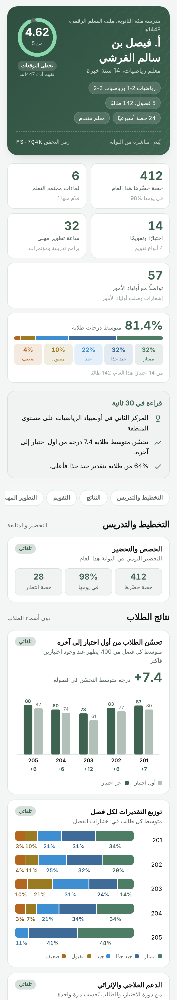
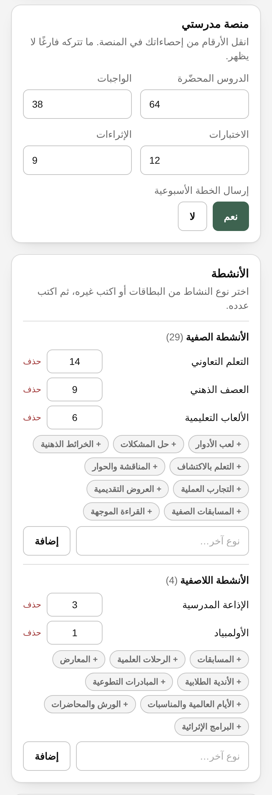
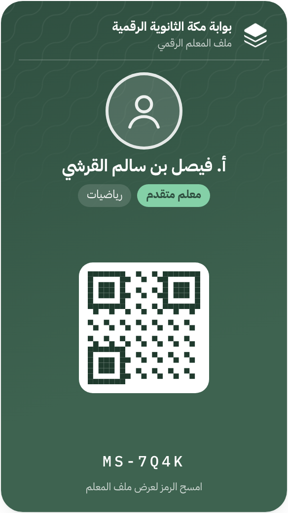

7:12
الأحد، 18 أكتوبر
وكيل الشؤون التعليمية
تم اختيارك ضمن أداة الملاحظة الصفية لفريق التقويم الخارجي من هيئة تقويم التعليم والتدريب.
تفرّغ لإعداد درسك…
والبوابة تجهّز لك
الوثائق والأدوات
ملف المعلم الرقمي
تقرير واحد عن أعمالك، يُبنى لحظة تفعيله
من عملك في البوابة… تلقائيًا

0حصة حضّرها
0متوسط طلابه
0تحسّن طلابه
حصصك وتحضيركنتائج طلابك وتحسّنهم
اختباراتكتطويرك المهني
وأضف منصة مدرستي
وأنشطتك الصفية واللاصفية

منصة مدرستي
الأنشطة
اللون والأقسام
بطاقة برمز ثابت يمسحه الزائر

كن جاهزًا قبل الزيارة
فعّل ملفك الآن الأداء الوظيفي ← ملف المعلم الرقمي